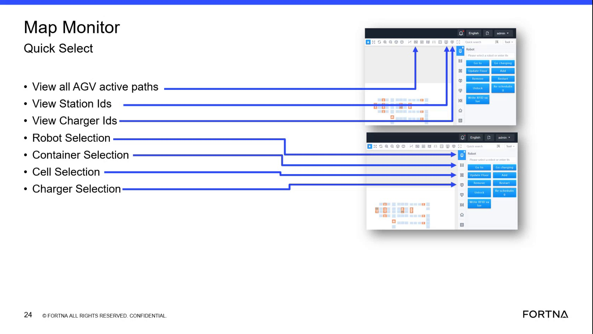

| Procedure ID | proc_display_station_ids_on_the_map_v1 |
|---|---|
| Title | Display Station IDs On the Map |
| Procedure Type | reference |
| Primary Role | L1_support |
| Support Safe | Yes |
| Validation Status | needs_sme_review |
| Merge Status | source_finalized |
Use the Map Monitor Quick Select control to display unique station IDs for station locations on the map so the correct station can be identified for debugging or problem identification.
Use when working in Map Monitor and you need to identify station locations by their unique station IDs, especially for debugging or problem identification.
Responsible role: L1_support
Instruction:
Open the Map Monitor screen and locate the Quick Select area on the left-side panel.
Expected result:
The Map Monitor screen is open and the Quick Select controls are visible.
Screens / Images:

Stop or Escalate If:
Responsible role: L1_support
Instruction:
Click the "View Station Ids" icon.
Expected result:
The station ID display option is activated.
Screens / Images:
Stop or Escalate If:
Responsible role: L1_support
Instruction:
Observe the map and identify the displayed station IDs for station locations.
Expected result:
Unique station IDs are visible on the map at station locations.
Screens / Images:
Stop or Escalate If:
Responsible role: L1_support
Instruction:
Use the displayed IDs to distinguish stations from cells, noting that stations are special locations with unique IDs.
Expected result:
The user can distinguish station locations using the displayed unique station IDs.
Screens / Images:
Stop or Escalate If:
Responsible role: L1_support
Instruction:
Record the station ID needed for debugging or problem identification if required by the task.
Expected result:
The required station ID is documented for later use in support investigation.
Stop or Escalate If: